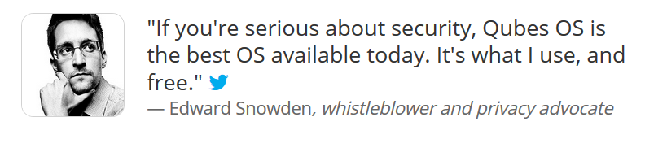
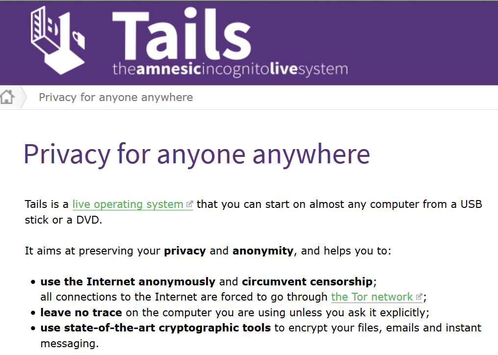

Computer security should be a top concern to every American these days. Do not be under the impression that you cannot get arrested if you are doing nothing wrong. Anything found on your computer, even if you did not view the file, makes you a potential criminal. Be alert. Be wary.
Introduction
When it came time for my retirement from MAJestic it was a total surprise. I opened my front door, as I did a thousand times before, and four armored vehicles drove up onto my lawn. The police came to my house in SWAT vehicles, armored vests and carried military-grade fully-automatic weapons.
A female detective, dressed in military black wearing a Kevlar vest and a holstered Glock strapped to her side showed me some documents that gave them full authority to search my home for anything even remotely illegal. They poured through the door like water released from a dam, and started rampaging though my house.
A computer expert, obvious due to his excessive weight and bright suspenders, started to unload various suitcases onto the kitchen counters in my house. He, as employed by the state, got my computer and plugged it into this device that he removed out of a ribbed metal suitcase. He plugged my laptop into the device and had full access to my computer. They didn’t even bother to ask me what my password was. They didn’t need it. They had full control of my “personal papers” and completely bypassed my passwords.
They were able to bypass all my security.
Over the years, I have often wondered about this. This event, as disturbing as it was, also pointed to something much more sinister. There are zero fourth amendment protections if you use most commonly available software.
In the old days, of course, I would have a huge safe with my personal papers in it. The police would have to come to the house with a warrant specifying and delineating everything that the police has the authority to seize and investigate. Not so today. They can take what they want and your Rights be damned.
You know, today everything is electronic. If the government can do that with laptop that had a pretty strong password, they can do anything. I used numbers, a mix of capital letters, and special characters.
I think most passwords are helpful against non-governmental agencies, but are useless against a strongly funded and financed governmental force. They are especially useless against the United States government. If Uncle Sam wants something, they just come and get it.
Indeed, if someone in the United States government wants something of yours, they will simply come and take it. They have the military. They have the weapons. They have the money. They have the numbers. They have the law. What is yours is theirs…
Now, I will never forget what that computer expert said to the detective when he was going through my computer. He said “I’m glad he used windows and not Linux. We’d have to call in XXXXXXX.“
Maybe I should have been using the Linux OS…
Well, for certain, it would have delayed the scouring of my laptop for unspecified criminal activity and / or intent. However it would not have prevented it. It would only add some additional steps and delays.
After much thought, it came to me that if I used an unusual OS that the state would have a dickens of a time trying to figure it out. Sure they could find a handful of people who were able to hack into Microsoft, and maybe one or two that could do so with Linux. But, what about something truly obscure…
And, what if it was coded in something other than English. Now that would make things truly interesting and difficult…
Just don’t say anything. Let them try to guess and figure out what kind of OS that you use. That might take a few years. Then, let them take a crack at breaking your encryption.
Other Operating Systems
People, you might be surprised to learn that there are more operating systems (OS) than Microsoft Windows, the various shades of Linux, or the Apple OS. There are. Here, let’s talk about this, shall we.
The reader should understand that even though the United States government, and others have created a very powerful and formidable surveillance network, there are options available to the creative user.
There are other operating systems out there and available for use. The reader is not stuck to using Windows, Apple OS, or UNIX. You can use truly obscure operating systems if you are computer savvy enough.
The benefit in doing this is that anyone wanting to access your computer will have a very difficult time finding a talented computer expert to do so. They are so difficult to find, and once found will be extremely pricey to use. Thus, the mere thought of so doing might just wreck the budget of the investigative agency. So ripping into the computer of concern would have to be completely justified. This also includes the NSA-provided deep dredging software that would troll your PC for what ever they might want to find. Let’s face it, everyone wants the “low hanging fruit”. Don’t make it easy for them.
Low Hanging Fruit. An American idiom that means a thing or person that can be won, obtained, or persuaded with little effort.
Concerning the alternative operating systems, I am not referring to the various flavors of UNIX. They are available, but not really that obscure and uncommon. This includes Ubuntu, Linux Mint, Chrome OS, Remix OS, Kubuntu. No, these and other Linux versions are more or less common enough. If someone wants to dredge your computer on these systems it is still possible. However, it won’t be automatic. They will need an expert, and some specialist software. Further, they might need to do so manually.
What I am discussing here are truly obscure operating systems where there might be 20 to 30 people on the entire planet who knows how to navigate their way around these systems. Let me present 37 obscure operating systems for the reader’s pleasure and consideration.
- AROS– Based on the Commodore Amiga. Let them try to crack this.
- Eye OS– eyeOS is a virtual web desktop that can uniquely serve any Windows and Linux application in a browser and integrate, at the same time, SaaS or local web services. It’s a nice option for certain.
- Haiku– Based on BeOS. You might need to pull out a 70 year old engineer out of retirement to hack a computer using this. Haiku is an open source project aimed at recreating and continuing the development of the BeOS operating system (which Palm Inc. bought and then discontinued). Haiku was initially known as OpenBeOS but changed its name in 2004.
- Kolibri OS– KolibriOS is a small open source x86 operating system written completely in assembly. It was forked off from MenuetOS in 2004 and has run under independent development since. In a review piece on alternative operating systems (2009), Tech Radar called it “tremendously impressive” noting its performance and streamlined code-base.
- Visopsys– This is a one-man hobby project by programmer Andy McLaughlin. The development began in 1997 and the OS is both open source and free. Visopsys stands for VISual Operating SYStem. Kind of cool to have only one person on planet earth with the skills to be able to hack into your computer.
- Plan 9– This is an OS from Bell Labs which is a distributed operating system, originally developed by the Computing Sciences Research Center at Bell Labs between the mid-1980s and 2002. It takes some of the principles of Unix, developed in the same research group, but extends these to a networked environment with graphics terminals.
- RISCOS– Based on the Acorn Archimedes.
- Syllable OS– This is a free and open source operating system for Pentium and compatible processors. Its purpose is to create an easy-to-use desktop operating system for the home and small office user. It was forked from the stagnant AtheOS in July 2002. It has a native web browser (Webster which is WebKit-based), email client (Whisper), media player, IDE, and many more applications. Another version of Syllable OS is the Syllable Server, which is based on Linux core.
- menuetos– An OS written entirely in Assembler! MenuetOS, also known as MeOS, is an operating system written entirely in assembly language which makes it very small and fast. Even though it includes a graphical desktop, networking and many other features it still fits on a single 1.44 MB floppy disk.
- TempleOS – Made by former atheist with former mental health issues who found God when he was hospitalised…. It has a biblical theme. One aspect of it that I find interesting is that everything is available and hackable. You have all the source code available right there and you can update it almost on the fly. Everything is written in a “HolyC” with hyperlinks and images.
- QNX– Is an “old” OS with a GUI and desktop environment called Photon – and the company behind it tried to artificially form a community around it that never took off. In 2010, Blackberry bought QNX and closed off everything. However, if you can get ahold of the OS, it would be nearly unhackable being so obscure.
- MINIX 3– This is a free, open-source, operating system designed to be highly reliable, flexible, and secure. It is based on a tiny microkernel running in kernel mode with the rest of the operating system running as a number of isolated, protected, processes in user mode.
- OS/2– Had IBM not gotten into an argument with Microsoft over Win3.1, we might all be using this today. ATMS were/are still using this up until recently. It was a good running system and then was killed off. However, fans of the system resurrected it and it is now available, it can still be easily hacked to run windows programs. An interesting article on this system can be found HERE.
- DexOS– It is an open source operating system designed to work like the minimalistic ones on gaming consoles, but for PCs. Its user interface is inspired by video game consoles and the system itself is very small (supposedly this one also fits on a floppy disk, like MenuetOS) and the OS can be booted from several different devices. Its creators have tried to make it as fast as possible.
- AtheOS– Amiga OS clone that was an experiment that lead to other Amiga clones.
- FreeDOS– A ridiculous amount of business software relies on MS-DOS, even to this day. We’re still seeing bespoke, newly-developed text-mode apps that run directly from the shell, probably because the complexity and potential for disaster that graphical interfaces add to the mix is not worth the risk in situations that demand 100% uptime. That business-critical software may rely on MS-DOS, but it doesn’t have to know you’re actually running FreeDOS. It’s an entirely compatible but completely free and open source remake of DOS that can handle just about everything its predecessor can do. That does, of course, means no multitasking, no protected mode, no GUI, but it’ll run your games and can even manage Windows 3.1 as long as you’re running it in standard mode.
- Oberon– The Oberon System is a modular single user single process multitasking operating system developed in the late 1980s at ETH Zürich using the Oberon programming language. It has an unconventional visual text-based user interface for activating commands, which was very innovative at that time.
- LoseThos OS– LoseThos is a 64-bit MultiCore PC Operating System that runs on a standard 64-bit PC, nothing exotic. It comes with a 64-bit compiler, libraries and all source code. It is not a UNIX — it’s brand new in all respects, written entirely from scratch. It’s perfect if you really want a mystery OS that others cannot hack into.
- ReactOS– A free and open-source operating system for x86/x64 personal computers intended to be binary-compatible with computer programs and device drivers made for Windows Server 2003. A good article on this OS can be found HERE and HERE. “Imagine running your favorite Windows applications and drivers in an open-source environment you can trust. That’s ReactOS. Not just an Open but also a Free operating system.” ReactOS is an operating system designed to be compatible with Microsoft Windows software. The project started in 1998 and today it can run many Windows programs well. The ReactOS kernel has been written from scratch but the OS makes use of Wine to be able to run Windows applications.
- Coyotos– This is considered by its creators to be an “evolutionary step” beyond the Extremely Reliable Operating System (EROS) operating system, which in turn was derived from KeyKOS, itself coming from Great New Operating System In the Sky (GNOSIS). The primary developer of EROS was Jonathan S. Shapiro, who is also a driving force behind Coyotos and the programming language BitC.
- BSD family– Pretty similar to Linux, not hard to cross over between them. BSD/OS (originally called BSD/386 and sometimes known as BSDi) was a proprietary version of the BSD operating system developed by Berkeley Software Design, Inc. (BSDi). BSD/OS had a reputation for reliability in server roles; the renowned Unix programmer and author W. Richard Stevens used it for his own personal web server for this reason. Also try this BSD version at http://pcbsd.org/ or this other version at https://www.openbsd.org/ (see below).
- PearPC– Was an emulator that allowed you to run MacOSX on a PC before Apple switched to Intel and we got the Hackintosh. Read about it HERE.
- CapROS– CapROS (“Capability-based Reliable Operating System”) is an open source operating system. It is a pure capability-based system that features automatic persistence of data and processes, even across system reboots. Capability systems naturally support the principle of least authority, which improves security and fault tolerance.CapROS is an evolution of the EROS system. While EROS was purely a research system, CapROS is intended to be a stable system of commercial quality. CapROS currently runs on Intel IA-32 and ARM microprocessors. CapROS is being developed by Strawberry Development Group with funding from DARPA and others. The primary developer is Charles Landau.
- Squeak OS– This is NOT an operating system. It is a specialized programming language that operates in an existing OS environment. This can be windows, UNIX, or even one of these other obscure OS systems. The Squeak programming language is a dialect of Smalltalk. It is object-oriented, class-based, and reflective. It was derived directly from Smalltalk-80 by a group at Apple Computer that included some of the original Smalltalk-80 developers. Its development was continued by the same group at Walt Disney Imagineering, where it was intended for use in internal Disney projects. Later on the group moved on to be supported by HP labs, SAP Labs and most recently Y Combinator.
- VMS– The name VMS is derived from virtual memory system, according to one of its principal architectural features. OpenVMS also runs on the Itanium-based families of computers. OpenVMS is a proprietary operating system (though the source code is available for purchase). Thus, it is not considered open-source software.
- RISC OS– RISC OS /rɪskoʊˈɛs/ is a computer operating system originally designed by Acorn Computers Ltd in Cambridge, England. First released in 1987, it was specifically designed to run on the ARM chipset, which Acorn had designed concurrently for use in its new line of Archimedes personal computers. RISC OS takes its name from the RISC (reduced instruction set computing) architecture supported. Read about it HERE.
- AmigaOS– AmigaOS 4, (abbreviated as OS4 or AOS4), is a line of Amiga operating systems which runs on PowerPC microprocessors. Although AmigaOS is a veteran in the field (many have fond memories of the original Amiga computer), its current version is a fully modern OS.
- SkyOS– This is a closed source project written by Robert Szeleney and volunteers. It originally started as an experiment in OS design. It’s intended to be an easy-to-use desktop OS for average computer users. Well-known applications such as Firefox have been ported to run on SkyOS.
- MorphOS– This is a lightweight, media-centric OS build to run on PowerPC processors. It is inspired by AmigaOS and also includes emulation to be able to run Amiga applications.
- GNU Hurd– This is the multiserver microkernel written as part of GNU. It has been under development since 1990 by the GNU Project of the Free Software Foundation, designed as a replacement for the Unix kernel, and released as free software under the GNU General Public License. While the Linux kernel soon proved to be a more viable solution, development of GNU Hurd continued, albeit at a slow pace.
- V2_OS– V2_OS is a open source operating system, created by V2_Lab, International Lab for the Unstable Media, Rotterdam, Netherlands. Since V2_Lab released the source code to the kernel and modules, a lot of developers from all over the world are working with it, and help to make V2_OS grow. V2_OS is the fastest operating system available for the 386+ PC. Everything in this system is focused on speed: the architecture, the file system, its avoidance of virtualization… and of course, the choice of development language: V2_OS is written in 100% pure 32 bit assembler.
- Bare Metal OS. BareMetal is an exokernel-based single address space operating system (OS) created by Return Infinity. It is written in assembly to achieve high-performance computing with minimal footprint with a Just Enough Operating System (JeOS) approach. The operating system is primarily targeted towards virtualized environments for cloud computing, or HPCs due to its design as a lightweight kernel (LWK). It could be used as a unikernel. It was inspired by another OS written in assembly, MikeOS, and it is a current-day example of an operating system that is not written in C or C++, nor based on Unix-like kernels.
- AuroraUX OS Project. AuroraUX is an operating system distribution based on the OpenSolaris kernel source base. The goal of the AuroraUX project is to create a high reliability core operating system using the US Department of Defense-developed Ada programming language.
- HelenOs. HelenOS is a portable microkernel-based multiserver operating system designed and implemented from scratch. It decomposes key operating system functionality such as file systems, networking, device drivers and graphical user interface into a collection of fine-grained user space components that interact with each other via message passing.
- BeTROS. This is the source code of BeRTOS operating system. It’s pretty darn obscure.
- PureDarwin. Darwin is the Open Source operating system from Apple that forms the basis for macOS, and PureDarwin is a community project to make Darwin more usable (some people think of it as the informal successor to OpenDarwin).
- Multics(Source Available). Multics (Multiplexed Information and Computing Service) was a mainframe timesharing operating system begun in 1965 and used until 2000. Multics began as a research project and was an important influence on operating system development. The system became a commercial product sold by Honeywell to education, government, and industry.
- Slax is a modern, live, pocket operating system based on Slackware Linux. Despite its small size of 220MB, it contains essential apps for basic computing, and you can extend its functionality using modules. Users can open a module (out of hundreds available e.g. Firefox, Libre Office) and the software will installed automatically.
- OpenBSD. This is an OS that is flying under the radar screen and is kind of a stealth effort. It is based on privacy and security. It is certainly worth the look. This is part of the BSD family mentioned above. Besides, any logo that is wearing a tin-foil-hat has my approval!
Last Minute Additions – Linux DistrOS
There are hundreds of Linux distros out there. For those of you laymen out there like myself, a distros is a modified Linux OS for special purposes. Often the reasons for this is simply for fun and amusement. The vast majority of them float around the internet in relative obscurity. Some are absolutely beautiful and stunning. many of them operate like MS Windows and it is easy to adapt to them quickly.
- Gentoo .
- Puppy Linux.
- CrunchBang
- Peppermint
- Fedora
- Manjaro
- Tails. Tails is a Linux distribution based on Debian. Tails stands for The Amnesic Incognito Live System, and can be run (without installation) from portable mediums such as optical disks and flash drives. As it is run entirely in the computer’s RAM, all files and browsing history is automatically erased once the system is turned off (amnesic). Aimed at preserving your privacy and anonymity while browsing, Tails implements many security tools, including the Tor anonymity network, and cryptographic tools to encrypt and secure your files, email, and instant messages to protect your private information, including your identity (incognito).
- Parrot
- openSUSE
- RancherOS
- Sabayon
- Antergos
- PCLinuxOS
- Nitrux
- KDE Neon
- feren OS
- Pop!_OS
- Zorin OS
- Solus OS
- Qubes OS is based on Xen, X Window System and Linux. Qubes provide hardened security using the security-by-isolation approach, creating many security domains, which are implemented as lightweight Virtual Machines (VMs). These domains have their own set of security restrictions, isolating one domain from the next. So if you separate your browser from your sensitive work data, a hacker or malware would not be able to access your information even if it has compromised your browser, thanks to the isolated domains and strategic compartmentalization. That’s the beauty of the security implementation of Qubes OS.
Links to DistrOS Sites
- DistrOS Watch
- The Best Linux DistrOS of 2018
- The most beautiful Linux DistrOS
- The Best Linux DistrOS for Beginners in 2018
- Wikipedia List of Linux DistrOS
Personal Selections
I would suggest Tails, or Qubes as the OS of choice.

Tails is also a good option. Tails, like Qubes, have been designed with privacy and security in mind.

Conclusions
When the United States was first formed, it was considered extremely important that the private papers and matters of a citizen be protected from others. If the government had a need to view these most sacred private matters, they would have to go to a judge and show reason to obtain them.
They would have to [1] document a reason, and [2] show that there was a victim or an aggrieved party.
As at that time, America followed British Common Law. They wrote the fourth Amendment to protect Americans from unreasonable search and seizure of a person’s private and personal papers and records. Only when there was a victim or harmed party, would a Judge issue a warrant to search; and specifically state what is to be searched for.
Amendment 4 Protection from Unreasonable Searches and Seizures The right of the people to be secure in their persons, houses, papers, and effects against unreasonable searches and seizures shall not be violated, and no warrants shall issue but upon probable cause, supported by oath or affirmation, and particularly describing the place to be searched and the persons or things to be seized.
Today the fourth amendment no longer exists as anything other than a joke. It is functionally nonexistent.
Today, it is just as easy to obtain (what has been referred to as) “no knock” search warrants. The police just show up unannounced without a search warrant and “hunt” for evidence indicative of illegal activity. Furthermore, if the NSA wants to remotely make someone look like a criminal all they need to do is hijack their computer. See the post on Disinformation Campaigns, and the software programs of POISONARROW and QUANTUMHAND.
Today, a secret court, with an appointed judge can order your fourth amendment protections be ignored for any reason what so ever.
There does not have to be a victim.
There does not need to be any evidence.
There does not need to be proof. Only an accusation by a person who can remain secret in defiance of the Sixth amendment.
Amendment 6 Rights of Accused Persons in Criminal Cases In all criminal prosecutions, the accused shall enjoy the right to a speedy and public trial by an impartial jury of the state and district wherein the crime shall have been committed, which district shall have been previously ascertained by law, and to be informed of the nature and cause of the accusation; to be confronted with the witnesses against him; to have compulsory process for obtaining witnesses in his favor; and to have the assistance of counsel for his defense.
It’s a difficult world that we live in today. If you cannot have privacy, then you functionally have no freedom. For the right to privacy is the bedrock from which all other liberties arise from.
The United States government has spent enormous sums of money making it easy for them to access your personal records and private papers. This is particularly true when everything is electronic.
And, do not expect some organization like the ACLU to come to your rescue. They have become co-opted by liberal progressive interests and today functions as a political army, rather than what they were initially set up to be. Read what Alan Dershowitz via The Gatestone Institute, has to say. Other link HERE.
If you want to regain your fourth amendment freedoms back, then you need to stop relying on elected politicians to to something about it. You need to take care of the matter yourself.
I suggest that you utilize an obscure operating system on your personal records and strongly encrypt it. Do not tell anyone your password, and what operating system that you use. That way, your computer becomes as hack-able as a river rock, and your personal papers and privacy is maintained.
Take Aways
- Having privacy is an important human need.
- Privacy used to be protected by the United States Constitution.
- It is rare for actual paper documents to be generated today, they are mostly in an electronic format.
- The politicians in the United States government have made it easy to access all personal papers in an electronic format.
- To keep your personal records private you need to encrypt your electronic records.
- My experiences have demonstrated that the encryption techniques most often discussed on the internet fail when confronted by the United States government.
- The best form of encryption is an obscure OS with a very comprehensive and strong password.
FAQ
Q: Are these the only obscure operating systems available?
A: No. Not at all. In fact, I would suggest a non-American OS. Maybe something out of Russia, China, Australia, South Africa, or maybe Poland. It’s hard enough trying to hack into a operating system when you have no common frame of reference, just image if it is in a language that you cannot understand.
- Jolla’s Sailfish OS. This is a Finnish OS that is used in Russia.
- Ubuntu Kylin. It is not surprising that China has its own operating system Ubuntu Kylin. As the name suggests Kylin is based on Ubuntu with extensive support for the Chinese language. Kylin was not always based on Ubuntu though. Initially, it was based on FreeBSD but later it was relaunched as Ubuntu Kylin in the year 2013.
- Nova 2015. Like China’s Kylin, Cuba’s national OS Nova is also based on Ubuntu. Latest version Nova 2015 aims to be lightweight in order to replace Windows XP on older hardware and hence it will be using LXDE desktop environment.
- Red Star OS. North Korea has its own national OS based on Linux and it goes by the name of Red Star OS. It is being developed since year 2002. There are hardly any details about this operating system because there is no website of Red Star OS. And since North Korea is almost cut off from the rest of the world, no other information is available about it except that it uses KDE.
- BOSS (Bharat Operating System Solutions). In India, BOSS is a Debian based Linux OS being developed by C-DAC (a government owned organization for advanced computing development). The Indian government has also adopted an Open Source policy to minimize its reliance on Microsoft. In fact, some state government has started to switch to open document format and BOSS Linux already.
- IGOS Nusantra Linux. In Indonesia, IGOS Nusantra Linux to promote Linux in Indonesia. It iss constantly being developed together with the community and has several variants including exclusive support for IoT (Internet of Things).
- Pardus Linux. Turkish Government launched Pardus Linux back in 2005. It is developed by Turkish National Research Institute of Electronics and Cryptology in collaboration with Scientific and Technological Research Council of Turkey. Pardus was appreciated for introducing PiSi package management system. It is based on Debian and uses KDE.
- Deepin Linux. Deepin Linux is an open source, Chinese Linux distribution that aims to offer a clean and visually appealing interface to Linux users. Deepin Linux, one the prettiest Linux distros around, also comes with Hot Corners and Gestures that make your Linux desktop experience refreshing. Another striking feature of Deepin is its pleasing installer that makes sure that your experience isn’t sub-par at any stage. It comes with Deepin Store that provides lots of applications that aren’t available in Ubuntu Store.
Q: Why does this matter? I am doing nothing wrong.
A: You do not need to do anything wrong to be accused of something. Look at what happened to Brett Kavanaugh. He worked hard, and was a good honest man, yet he went through Hell. Remember? Hey! I’ve got news for you. That could just as well have been you, or your father. It could have been your brother. It could have been your child.
Sixty-five women say that they knew Brett Kavanaugh well enough to vouch for his character while he was in high school. This is a remarkable number since Kavanaugh went to an all-boys Catholic high school. He socialized with girls at local all-girls high schools, but the class sizes at these schools seem to have been small. It is hard to imagine that Kavanaugh could have known more than a couple hundred similarly young women, so it took a remarkable turnout rate to get 65 signatures. -Daily Caller
Do not forget that most Americans commit three felonies every day without even realizing it. The laws are so numerous and vague that if someone wanted to arrest you and throw you into prison, they can do it.
If you are an average American, then you are a repeat felon. In his stunning book, Three Felonies a Day: How the Feds Target the Innocent (2009), civil-liberties attorney Harvey A. Silverglate estimates that the average person unknowingly breaks at least three criminal laws each and every day. Federal statutes and regulations have become so voluminous and vague that over-reaching prosecutors can target anyone at any time. They may think you are guilty, they could want leverage to force your co-operation, they may be vengeful, or they could be building their own careers; the motives are secondary. What’s primary is the clout and, in this, the federal bureaucracy of the United States now rivals the Soviet Union at the zenith of its power. Even if you are ultimately proven innocent, the ‘vindication’ will come after years of abusive prosecution during which your assets will be frozen, your family interrogated and, perhaps, threatened, your reputation smeared, your life left in shambles. How did this happen in the Land of the Free? How did America drift so far from common law roots that preserved peace and property? -Wendy Mcelroy
Q: What advice do you suggest if I implement your suggestion?
A: Use TOR or some other means to obtain the OS software. The United States government can track your browsing history by Google, the NSA or your ISP (Thank you Barrack Obama.). Therefore, they can figure out which OS you are using. Don’t permit that. If you do not have the means to do any of these things, download all of them, and just let them guess which one you are using.
Q: Is there a stronger solution that what is suggested herein?
A: Yes. If you are reasonably proficient in coding. Write your own OS. Take an obscure OS and rewrite it as only you know how. Now, in doing so, there will be but one person on this entire planet who can hack into your computer. No one else will be able.
Posts Regarding Life and Contentment
Here are some other similar posts on this venue. If you enjoyed this post, you might like these posts as well. These posts tend to discuss growing up in America. Often, I like to compare my life in America with the society within communist China. As there are some really stark differences between the two.
More Posts about Life
I have broken apart some other posts. They can best be classified about ones actions as they contribute to happiness and life. They are a little different, in subtle ways.

Stories that Inspired Me
Here are reprints in full text of stories that inspired me, but that are nearly impossible to find in China. I place them here as sort of a personal library that I can use for inspiration. The reader is welcome to come and enjoy a read or two as well.